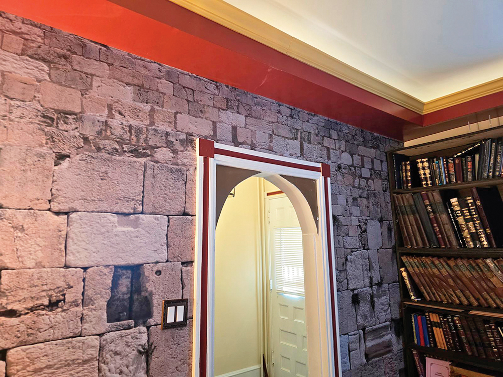
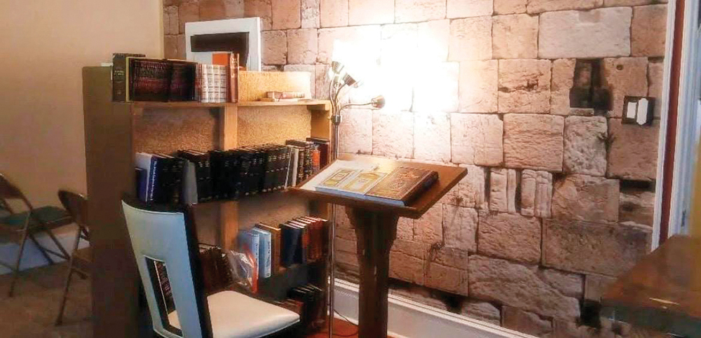

On the banks of the Delaware River, in a town few would associate with Jewish life, Rabbi Isaac Yagod is building an observant Jewish community. Easton, Pennsylvania is home to Congregation Beth Avraham, a shul that blends historic charm, natural beauty and a sense of happiness.
“We stand at the first stop in Pennsylvania when you come across the highway from New Jersey,” Rabbi Yagod said. “We settled here for the long term. We already have a wonderful core group, and there is a real opportunity for people to come and build a future here.”
Beth Avraham is no longer a vision in progress—it is alive and active. The renovations are complete, the building is fully functional, and the beit midrash is equipped and welcoming. “We have classes every night, people coming in for events, and we have a wedding planned for this winter,” Rabbi Yagod noted.


The idea for the shul began with a map. “A friend and I were looking at Pennsylvania, and we noticed something striking,” Rabbi Yagod recalled. “Within a 50-mile radius of New York City, there was one obvious place where a Jewish community could grow—close to New York, close to New Jersey, close to everything—but not yet developed. It was just there for the taking.”
Easton stood out immediately. Some Jews had been living there for decades, but Orthodox life was absent. They then discovered a nearly 200-year-old Victorian home in a breathtaking location. “The shul literally sits on the banks of the Delaware River,” the rabbi said. “It overlooks one of the most beautiful scenic spots in the region.”
The surroundings are part of the experience. Boating, tubing, fishing, hiking and birdwatching are all steps away. “We are on the side of a mountain. So the air is fresh, the environment is natural, and there are farms all around,” Rabbi Yagod said. “Housing is affordable and yet no Jewish community had ever taken root here before.”
What has emerged is a shul that visitors consistently describe as one of a kind. “People are amazed by how welcoming it feels,” Rabbi Yagod explained. “It’s nonjudgmental—no one cares how you’re dressed—and people leave feeling they gained more than they expected. They learn, they connect, and they feel inspired.”
One word Rabbi Yagod uses repeatedly is “simcha.” “It’s a very happy place. That’s what matters most.” That atmosphere has drawn regular visitors from Rockland County and New Jersey, some of whom now come week after week.
Beth Avraham is also building partnerships. The shul works with a local Jewish day school in Allentown, about 30 minutes away. Pennsylvania’s school-voucher system helps offset tuition costs, and Rabbi Yagod points out that the state is unusually supportive of private and religious education. “There’s a strong respect here for tradition. People are allowed to live according to their values.”
Housing in Easton is another major draw. “You can find spacious homes ranging from about $275,000 to $475,000,” Rabbi Yagod said. “We overlook a major river, there are hills and mountains nearby, and it’s incredibly peaceful. Crime is very low—you don’t have to lock your doors.”
Despite the tranquility, Easton is well connected. “You can take a bus from downtown Easton to Manhattan in about an hour and 25 minutes,” the rabbi said. “There are also buses to Philadelphia, and the ABE Airport—Allentown, Bethlehem, Easton—is just 25 minutes away. Newark Airport is an hour’s drive.”
Everyday Jewish life is becoming easier as well. “Local stores are expanding their kosher sections,” Rabbi Yagod noted. “You’ll find kosher baked goods, cheeses and more—and it keeps growing.”
For families, educational options are practical. Elementary schools are available in Allentown, and for high school, Kushner in Livingston is less than an hour away. “There are solid options,” Rabbi Yagod noted. “It’s workable for Modern Orthodox families.”
The greatest challenge right now is scale. “We need a critical number of families,” he said. “Once that happens, the community will grow naturally. This place could really boom—like another Teaneck or Monsey, but in a much more natural setting.”
Visitors see the potential immediately. After a pre-Rosh Hashanah visit, a group from Monsey told him, “We’ve traveled the world and seen many communities, but nothing is like this.”
A large part of that impression comes from Shabbat at Beth Avraham. “Shabbat here is a full experience,” Rabbi Yagod said. Services are lively, filled with singing and participation. All three Shabbat meals are served in the shul.
“People call the meals here ‘five-star,’ ” he said. “And there is a big emphasis on health.” After Friday night dinner, people stroll along the river, even in winter. On Shabbat day, after tefillah, a full lunch that is delicious and healthy is served. Afternoon shiurim and seudah shlishit follow later. Children and teens can play games, while adults can attend shiurim throughout the day.
“We take our time,” Rabbi Yagod emphasized. “No one is in a hurry to leave Shabbat. That’s what makes it special.”
The shul itself is housed in a double Victorian home. This adds to the warmth. “People become family very quickly,” the rabbi said. “It’s intimate, educated, lively and welcoming.”
With the Crayola Center five minutes away, river activities across the street, and historic downtown Easton just around the corner, the setting feels like a permanent retreat. “It’s like living in a vacation town all year,” Rabbi Yagod said. “The tranquility alone is worth it.”
“It’s like living in a vacation town all year. The tranquility alone is worth it.”
For updates, Beth Avraham, “The Easton Shul,” can be found on Facebook, and Rabbi Yagod can be reached at Rabbiyagod1@gmail.com.